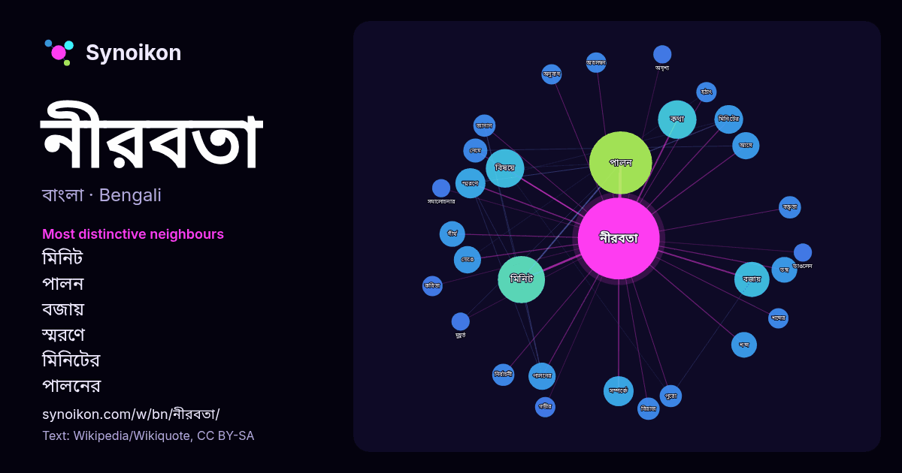

বাংলা · আজকের শব্দের তালিকা
নীরবতা
“silence” · উইকিপিডিয়া, Wikiquote থেকে 455টি প্রয়োগে এর চারপাশে পাওয়া শব্দ।

সবচেয়ে স্বতন্ত্র প্রতিবেশী
- মিনিট 23×
- পালন 15×
- বজায় 12×
- স্মরণে 11×
- মিনিটের 10×
- পালনের 9.2×
- বিষয়ে 8.6×
- ভঙ্গ 8.5×
- ভেঙে 7.8×
- কথা 6.9×
- বিরাজ 6.6×
- নেমে 6.4×
- বক্তৃতা 6.3×
- নির্বাচনী 6.2×
- অবলম্বন 5.4×
- শব্দ 5.4×
- দীর্ঘ 5.4×
- হঠাৎ 5.2×
- সম্পর্কে 5.2×
- জানান 5.1×
× = সাধারণ উইকিপিডিয়া টেক্সটের চেয়ে কত গুণ বেশি।
সবচেয়ে ঘন ঘন প্রতিবেশী
- পালন 48
- মিনিট 27
- কথা 18
- বিষয়ে 18
- বজায় 15
- সময় 15
- সম্পর্কে 11
- স্মরণে 11
- মিনিটের 10
- আসে 9
- পালনের 9
- ভেঙে 9
- দীর্ঘ 8
- ভঙ্গ 8
- শব্দ 8
- নেমে 7
- ভাষা 7
- শেষ 7
- কেবল 6
- জাতীয় 6
প্রসঙ্গে
- উদ্দীপক হিসেবে কাজ করতে পারে। নির্বাচনী নীরবতা সাধারণত সামাজিক উদ্বেগমূলক ব্যাধির সঙ্গে একসাথে দেখা যায়। নির্বাচনী নীরবতা থাকা ব্যক্তিরা তখনও চুপ থাকেন, যখন Wikipedia snippets · নির্বাচনী নীরবতা
- নয়"। তোমার নীরবতা তোমাকে রক্ষা করবে না সংকলনে থাকা প্রথম প্রবন্ধের একটি উদ্ধৃতি, "ভাষা ও কর্মে নীরবতার রূপান্তর"। তিনি বলেন, "আমার নীরবতা আমাকে রক্ষা Wikipedia snippets · তোমার নীরবতা তোমাকে রক্ষা করবে না (প্রবন্ধ সংকলন)
- টেলিভিশন ক্রীড়া - ফুটবলের নীরবতা - মনোনীত সম্প্রচার পুরস্কার সেরা সংবাদ এবং কারেন্ট অ্যাফেয়ার্স প্রোগ্রাম - ফুটবলের নীরবতা - অত্যন্ত প্রশংসিত এআইবি পুরস্কার Wikipedia snippets · আল জাজিরা ইনভেস্টিগেটস
- সম্মেলনে প্রতিনিধিস্বরূপ রাশিয়া যান অমিতাভ দাশগুপ্ত। ১৯৯৯ সালে তার আমার নীরবতা আমার ভাষা কাব্যগ্রন্থের জন্য পশ্চিমবঙ্গের রবীন্দ্র পুরস্কার প্রাপ্ত হন। Wikipedia snippets · অমিতাভ দাশগুপ্ত
- এলাকা। শীতের রাত এবং সময় তখন আনুমানিক সাড়ে চারটা বা পাঁচটা। চারদিকে সুমসাম নীরবতা। এমন সময় প্রচণ্ড গোলাগুলি শুরু। পাকিস্তান সেনাবাহিনীর ৩১ পাঞ্জাব রেজিমেন্ট Wikipedia snippets · ওয়াকার হাসান
- পালিয়ে যায়। আর ডি ব্যানার্জি বলেছেন যে শূরাপালের মৃত্যু সম্পর্কে রামচরিতমের নীরবতা ইঙ্গিত দেয় যে শূরাপালকে রামপাল হত্যা করেছিলেন, যদিও আরসি মজুমদার এই দাবির Wikipedia snippets · দ্বিতীয় শূরপাল
- আত্মীয় নেতা গুরু প্রতিপালক সর্দার প্রেমিক প্রতিবেশী আনুগত্য প্রার্থনা নীরবতা ইবাদত দণ্ডায়মান জাহান্নাম ইত্যাদি। পবিত্র কুরআন শরিফে প্রায় ৪টি অর্থে Wikipedia snippets · মাওলানা
- বাংলাদেশ-নিউজিল্যান্ড প্রথম ওয়ানডে শুরুর আগে তার প্রতি সম্মান জানিয়ে এক মিনিট নীরবতা পালন করা হয়। "হঠাৎ চলে গেলেন শেখ সালাহউদ্দিন"। যুগান্তর। ৩০ অক্টোবর ২০১৩। Wikipedia snippets · শেখ সালাহউদ্দিন
আরও শব্দ
- অরণ্য
- আয়না
- ইতিহাস
- ঈশ্বর
- কাজ
- কুকুর
- ক্ষমতা
- খাদ্য
- গান
- গ্রীষ্ম
- ঘড়ি
- ঘণ্টা
- ঘোড়া
- ছায়া
- জননী
- জলবায়ু
- জীবন
- ঝড়
- টাকা
- ট্রেন
- দারুচিনি
- দ্বীপ
- নক্ষত্র
- পরিবার
- পানি
- পাহাড়
- প্রকৃতি
- বাগান
- বিজ্ঞান
- বিড়াল
- বৃষ্টি
- ভাষা
- মধু
- মরুভূমি
- মানচিত্র
- মৃত্যু
- রাস্তা
- রুটি
- লবণ
- শরৎ
- শহর
- শিল্প
- শীত
- সত্য
- সময়
- সেতু
- সোনা
- স্বাস্থ্য
- হৃদয়
2026-10-09 তারিখে ডিফল্ট সেটিংসে (±5 শব্দ, মাঝারি কর্পাস) আগে থেকে গণনা করা। ইন্টারঅ্যাক্টিভ মানচিত্র লাইভ ডেটা দিয়ে এটি হালনাগাদ করতে পারে।
যন্ত্রে অনূদিত ইন্টারফেস; সংশোধন স্বাগত।